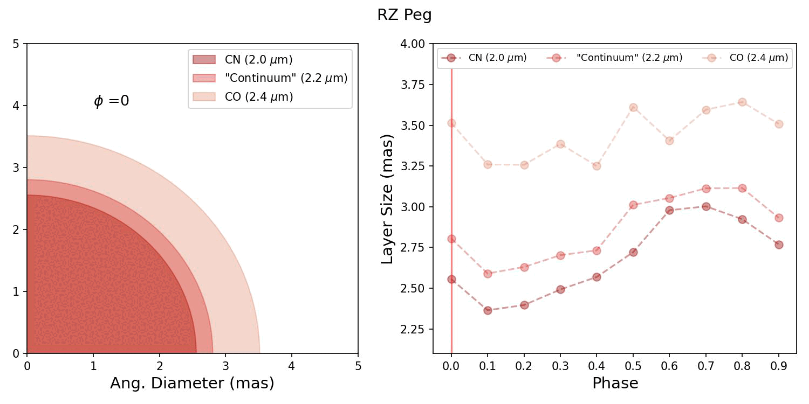
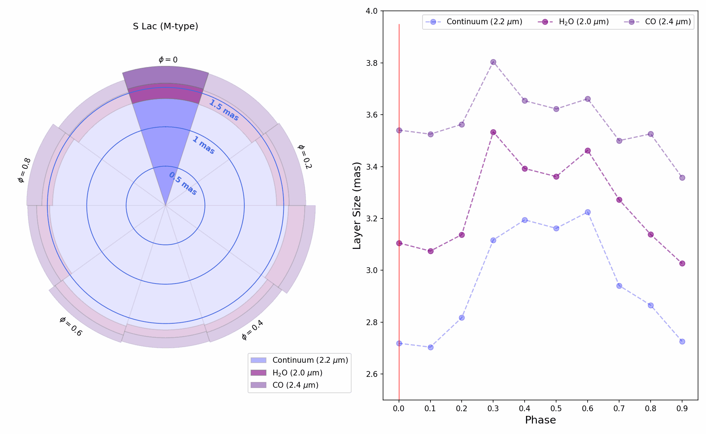

Narrowband Behavior of Mira Variables
Cool Stars 23 - Mira Variables - van Belle, Baylis-Aguirre, Creech-Eakman
Phase-dependent sizes of Miras in continuum (2.2um), CO (2.4um), and CN (C-rich) or H2O (O-rich) (2.0um).

RZ Peg (above) is a carbon-rich Mira.

S Lac(above) is an oxygen-rich Mira.
Supporting a Cool Stars 23 poster presented by Gerard van Belle.